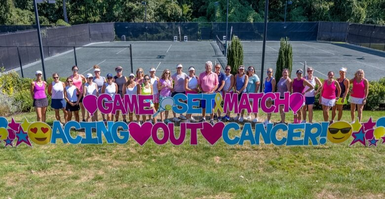

From Philadelphia to New York City to New Zealand, communities around the globe come together to raise awareness—and financial support—for cancer research and patient care. Passionate organizers adapted events into virtual formats, added safety protocols and embraced tools like Penn's Giving Pages to honor loved ones and frontline healthcare workers and stay connected in a shared mission.
The (Literal) Fight Against Cancer
A star-studded event that brings together champions from across the cancer community, Philly Fights Cancer has raised more than $42 million for cancer research at the Abramson Cancer Center—drastically improving outcomes for people with cancer.
Founded in 2015 by the Abramson Family, Philly Fights Cancer brings together a powerful community of donors, cancer experts on the front line, and patients and families who share the Abramson Cancer Center's commitment to the forward-thinking research and compassionate care for which the Center is internationally renowned.
Required Party Attire: Jeans
This year's Basser Jean Bash, co-chaired by Mindy and Jon Gray and Shari and Len Potter did more than raise a record-breaking $17 million for research at the Basser Center for BRCA. The fashionable event held in New York celebrated 10 years of progress and hope, featured a powerful set of advocates including tennis legend Chris Evert, and Penn's new president Liz Magill, and ended with a special performance from Sarah Bareilles. The evening also raised critical awareness of BRCA mutations and helped spread knowledge to families at risk of BRCA-related cancers. By addressing BRCA from all sides, the Basser community is creating connections and discoveries that will help generations of families.
BRCA1 and BRCA2 gene mutations bring an increased risk for breast, ovarian, pancreatic and prostate cancers. These hereditary mutations affect both men and women, and can bring up to a 75% lifetime risk of developing breast cancer and up to a 50% risk of ovarian cancer.
Communities Come Together for Cancer Research
2013 marked the start of the Breakthrough Bike Challenge. Since then, this organization has raised over $2 million for cancer research at the Abramson Cancer Center. Now known as the Breakthrough Challenge, their community has grown even stronger by incorporating far more than a bike ride, including a virtual option. Developed in response to the pandemic, the virtual format helped them continue to fundraise and reach an even wider network. And what an impact the Breakthrough Challenge has made at the Abramson Cancer Center. Proceeds have helped 43 scientists with pilot funding to pursue their novel ideas, building our pipeline for innovation and this powerful community.
In the spirit of paying it forward, in 2020, Penn cancer researcher and BBC Cooper Scholar, Alfred Garfall, MD, and his son pedaled 100 miles for the cause, joining nearly 500 fellow bikers, spinners, runners and walkers who logged 20,875 miles in the challenge.
"Potential donors to research may think: These projects take so much money, how could I possibly make a difference?" Dr. Garfall says. "The key is that the effect multiplies. That seed funding, even if it's modest, enables us to get larger amounts from outside sources."

Jay Sigel Invitational
Since its start 30 years ago, the Jay Sigel Invitational has raised more than $3M for prostate and breast cancer research at the Abramson Family Cancer Research Institute (AFCRI)—helping to transform a relatively underfunded area of cancer research into a hub of activity and advancement. This loyal community has helped foster an environment where researchers work hand-in-hand with clinicians to translate basic science discoveries into personalized therapies that benefit cancer patients throughout the world.
Bury Your Memories
A group of like-minded folks gather the pop-punk community for a nationwide musical concert to raise money for patients and families experiencing financial distress as a result of cancer.
Steps to Cure Sarcoma
This Pennsylvania 5K run and walk fundraiser—now in its sixth year—for the Penn Medicine Sarcoma program, a collaborative endeavor between Penn Medicine, The Children's Hospital of Philadelphia and Penn Vet, focused on developing new approaches to diagnosing and treating pediatric and adult bone and soft tissue tumors. What started as a gathering of a few hundred people supporting a rare disease now represents a passionate community that has contributed nearly $1M to sarcoma research at Penn.
Queenstown Half Marathon
Avid runner and U.S. expatriate Sarah Parkinson lives in New Zealand. Being far from home is not easy, so to help feel more connected and to honor her mother who passed away from cancer, she dedicated her participation in a local half-marathon to help raise money for the Abramson Cancer Center. Check out Sarah's video series where she and her dog Betty White trained in New Zealand's countryside.